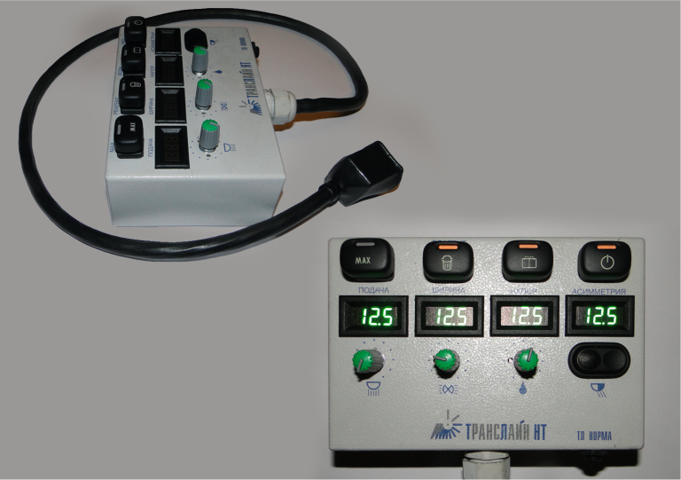

Пульты управления КДМ
Пульт электроуправления оборудованием дорожных уборочных машин типа КДМ давно стал обязательным атрибутом дорожной техники. Многообразие пультов соответствует многообразию дорожных машин. Инженеры нашей компании разработали и освоили производство универсальных пультов, пригодных для большинства коммунальных дорожных машин. Эти пульты унифицированы для применения на машинах с распределителями реагентов, которые могут быть как российского производства, так и импортными.
Создание таких пультов стало возможным благодаря большому опыту эксплуатации и ремонта пультов разных дорожных машин, произведенных как в России, так и за рубежом. Для обеспечения ремонтопригодности нашего пульта в условиях неразвитой сервисной сети мы отказались от использования программируемых микропроцессорных устройств, а также применили комплектующие изделия, рассчитанные на тяжёлые условия эксплуатации. Более того, в пультах широко применяются общедоступные автомобильные комплектующие российского производства.
Мы предлагаем к поставке два варианта пульта. Бюджетная модель ТЛ СТАРТ содержит базовый набор команд, используемых в работе уборочных дорожных машин: плотность и ширина посыпки, увлажнение, посыпка с увеличенной плотностью.
Модель ТЛ НОРМА позволяет также устанавливать асимметрию распределения реагентов.
В настоящее время заканчивается разработка и испытание пульта ТЛ ПРОФИ, который дополнительно обеспечивает равномерную посыпку реагента вне зависимости от изменения скорости движения машины.
Создание таких пультов стало возможным благодаря большому опыту эксплуатации и ремонта пультов разных дорожных машин, произведенных как в России, так и за рубежом. Для обеспечения ремонтопригодности нашего пульта в условиях неразвитой сервисной сети мы отказались от использования программируемых микропроцессорных устройств, а также применили комплектующие изделия, рассчитанные на тяжёлые условия эксплуатации. Более того, в пультах широко применяются общедоступные автомобильные комплектующие российского производства.
Мы предлагаем к поставке два варианта пульта. Бюджетная модель ТЛ СТАРТ содержит базовый набор команд, используемых в работе уборочных дорожных машин: плотность и ширина посыпки, увлажнение, посыпка с увеличенной плотностью.
Модель ТЛ НОРМА позволяет также устанавливать асимметрию распределения реагентов.
В настоящее время заканчивается разработка и испытание пульта ТЛ ПРОФИ, который дополнительно обеспечивает равномерную посыпку реагента вне зависимости от изменения скорости движения машины.
ОСНОВНЫЕ ХАРАКТЕРИСТИКИ
Назначение пульта
формирование сигналов для управления работой оборудования дорожной уборочной машины, цифровая светодиодная индикация всех установленных режимов работы оборудования.
Кузовное сменное оборудование
совместимое с пультом:
работа с "зимним" комплектом оборудования (распределителей ПГМ):
Назначение пульта
формирование сигналов для управления работой оборудования дорожной уборочной машины, цифровая светодиодная индикация всех установленных режимов работы оборудования.
Кузовное сменное оборудование
совместимое с пультом:
распределитель противогололедных материалов
поливо-моечное оборудование
оборудование подметальное уборочное сменное (ОПУС)
Пульт поддерживает работу с навесным распределяющим оборудованием производителей различных марок (ЕРОКЕ, Giletta, Schmidt, RASCO, МКДУ, КДМ и т.п.)
Пульт поддерживает работу с навесным распределяющим оборудованием производителей различных марок (ЕРОКЕ, Giletta, Schmidt, RASCO, МКДУ, КДМ и т.п.)
работа с "зимним" комплектом оборудования (распределителей ПГМ):
регулировка плотности, ширины и асимметрии распределения противогололедных материалов
включение/выключение режима увеличенной плотности распределения ПГМ
включение/выключение режима и регулировка степени увлажнения противогололедных материалов
включение/выключение проблескового маяка (желтого цвета)
Входные цепи пульта имеют защиту от переполюсовки.
Выходные цепи пульта защищены от короткого замыкания.
Органы управления пульта имеют регулируемую подсветку.
